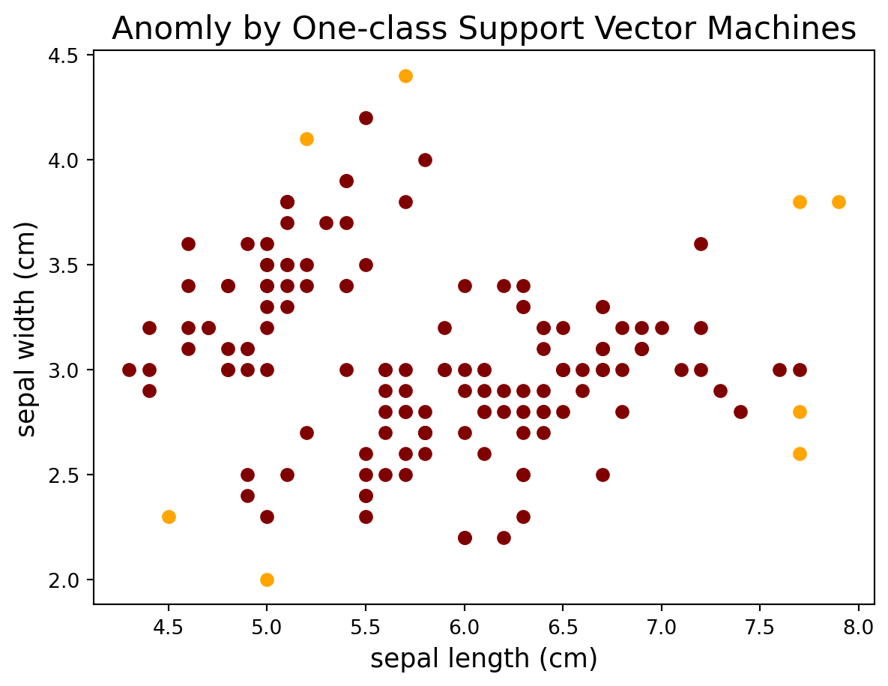

Exploring Anomaly/Outlier Detection in Machine Learning with Python
What is Anomaly Detection?
Anomaly detection, also known as outlier detection, refers to the process of identifying patterns or instances that deviate significantly from the norm in a dataset. Anomalies are observations that do not conform to expected behavior and may indicate unusual events, errors, or outliers in the data. Anomaly detection is applied in various fields such as finance, cybersecurity, manufacturing, and healthcare.
There are several approaches and algorithms used for anomaly detection:
Statistical Methods:
Z-Score: This method measures the number of standard deviations a data point is from the mean. Points with a high Z-score are considered anomalies.
IQR (Interquartile Range): This method defines a range based on the interquartile range and flags points outside this range as anomalies.
Machine Learning Algorithms:
Isolation Forest: This algorithm builds an ensemble of isolation trees to isolate anomalies. It works by randomly selecting a feature and then randomly selecting a split value between the minimum and maximum values of the selected feature.
One-Class SVM (Support Vector Machine): This algorithm is trained on normal instances and aims to find a hyperplane that separates the normal instances from the outliers.
Local Outlier Factor (LOF): is an anomaly detection algorithm that assesses the local density deviation of data points in a dataset. LOF works on the principle that anomalies are often characterized by having a significantly lower local density compared to their neighbors.
Autoencoders: These are neural network models that learn to encode input data into a lower-dimensional representation and then decode it back to the original data. Anomalies may have higher reconstruction errors.
Clustering Methods:
DBSCAN (Density-Based Spatial Clustering of Applications with Noise): This algorithm groups together data points that are close to each other and identifies points that are in sparser regions as anomalies.
K-Means Clustering: Anomalies may be detected by looking at instances that do not belong to any cluster or are in small clusters.
and so on…
Comparing Anomaly Detection algorithms for outlier detection on Iris dataset
Below displays the top five rows of the iris dataset from the Scikit Learn which containing the following features:
sepal length (cm)
sepal width (cm)
petal length (cm)
petal width (cm)
target
Code
from sklearn.datasets import load_iris df = load_iris(as_frame=True).frame df.head(5)
sepal length (cm)
sepal width (cm)
petal length (cm)
petal width (cm)
target
0
5.1
3.5
1.4
0.2
0
1
4.9
3.0
1.4
0.2
0
2
4.7
3.2
1.3
0.2
0
3
4.6
3.1
1.5
0.2
0
4
5.0
3.6
1.4
0.2
0
Next, the following provides various visualization examples using different anomaly detection algorithms
1. Local Outlier Factor (LOF)
Code
# Import the necessary modules import numpy as np import matplotlib.pyplot as plt from sklearn.datasets import load_iris from sklearn.neighbors import LocalOutlierFactor # Load the datasets df = load_iris(as_frame=True).frame X = df[['sepal length (cm)','sepal width (cm)']] # Define the model and set the number of neighbors lof = LocalOutlierFactor(n_neighbors=5) # Fit the model to the data lof.fit(X) # Calculate the outlier scores for each point scores = lof.negative_outlier_factor_ # Identify the points with the highest outlier scores outliers = np.argwhere(scores > np.percentile(scores, 95)) # Plot anomly colors=['maroon','orange'] for i inrange(len(X)): if i notin outliers: plt.scatter(X.iloc[i,0], X.iloc[i,1], color=colors[0]) # Not anomly else: plt.scatter(X.iloc[i,0], X.iloc[i,1], color=colors[1]) # anomly plt.xlabel('sepal length (cm)',fontsize=13) plt.ylabel('sepal width (cm)',fontsize=13) plt.title('Anomly by Local Outlier Factor',fontsize=16) plt.show()
2. Isolation Forest
Code
# Import the necessary modules import numpy as np import matplotlib.pyplot as plt from sklearn.datasets import load_iris from sklearn.ensemble import IsolationForest df = load_iris(as_frame=True).frame X = df[['sepal length (cm)','sepal width (cm)']] # Define the model and set the contamination level model = IsolationForest(contamination=0.05) # Fit the model to the data model.fit(X) # Calculate the outlier scores for each point scores = model.decision_function(X) # Identify the points with the highest outlier scores outliers = np.argwhere(scores < np.percentile(scores, 5)) # Plot anomly colors=['maroon','orange'] for i inrange(len(X)): if i notin outliers: plt.scatter(X.iloc[i,0], X.iloc[i,1], color=colors[0]) # Not anomly else: plt.scatter(X.iloc[i,0], X.iloc[i,1], color=colors[1]) # anomly plt.xlabel('sepal length (cm)',fontsize=13) plt.ylabel('sepal width (cm)',fontsize=13) plt.title('Anomly by Isolation Forest',fontsize=16) plt.show()
3. One-class Support Vector Machines (SVMs):
Code
# Import the necessary modules import numpy as np import matplotlib.pyplot as plt from sklearn.datasets import load_iris from sklearn import svm df = load_iris(as_frame=True).frame X = df[['sepal length (cm)','sepal width (cm)']] # Define the model and set the nu parameter model = svm.OneClassSVM(nu=0.05) # Fit the model to the data model.fit(X) # Calculate the outlier scores for each point scores = model.decision_function(X) # Identify the points with the highest outlier scores outliers = np.argwhere(scores < np.percentile(scores, 5)) # Plot anomly colors=['maroon','orange'] for i inrange(len(X)): if i notin outliers: plt.scatter(X.iloc[i,0], X.iloc[i,1], color=colors[0]) # Not anomly else: plt.scatter(X.iloc[i,0], X.iloc[i,1], color=colors[1]) # anomly plt.xlabel('sepal length (cm)',fontsize=13) plt.ylabel('sepal width (cm)',fontsize=13) plt.title('Anomly by One-class Support Vector Machines',fontsize=16) plt.show()

Other Example: DBSCAN for Outlier Detection and Marking Outliers
Let’s explore another example of using DBSCAN to label outliers and we will also mark them with Matplotlib in a scatter plot:
Code
import numpy as npfrom sklearn.datasets import make_blobsfrom sklearn.cluster import DBSCAN# Generate the dataX, y = make_blobs(n_samples=1000, centers=1, cluster_std=4, random_state=123)# Define the DBSCAN parameterseps =3min_samples =5# Create the DBSCAN modeldbscan = DBSCAN(eps=eps, min_samples=min_samples)# Fit the model to the datadbscan.fit(X)# Get the labels of the data pointslabels = dbscan.labels_# Identify the outliersoutliers = np.where(labels ==-1)[0]# Print the number of outliersprint("Number of outliers:", len(outliers))# Plot the data with the outliers highlightedplt.scatter(X[:, 0], X[:, 1], c=labels)plt.scatter(X[outliers, 0], X[outliers, 1], c="red", marker="x")plt.show()
Number of outliers: 1
Conclusion
In this blog post, we explored anomaly detection in machine learning using different algorithm approaches such as LOF, Isolation Forest, and one-class SVM on the Iris dataset. Beside we also explore the DBSCAN for outlier detection in scatter plot.
Anomaly detection is a critical task in various fields, including fraud detection, network security, and quality control. You can experiment with different datasets, explore other anomaly detection algorithms like K-Means Clustering, Z-score (statistic), and Autoencoders, and adjust threshold values to adapt to specific use cases.
---title: "Anomaly/Outlier Matrix"author: "Huayu Liang"date: "now"categories: [ML, visualization, matrix]image: "matrix.png"---Image from the source: [Outlier Detection and Anomaly Detection with Machine Learning](https://medium.com/@mehulved1503/outlier-detection-and-anomaly-detection-with-machine-learning-caa96b34b7f6)# Exploring Anomaly/Outlier Detection in Machine Learning with Python## What is Anomaly Detection?Anomaly detection, also known as outlier detection, refers to the process of identifying patterns or instances that deviate significantly from the norm in a dataset. Anomalies are observations that do not conform to expected behavior and may indicate unusual events, errors, or outliers in the data. Anomaly detection is applied in various fields such as finance, cybersecurity, manufacturing, and healthcare.There are several approaches and algorithms used for anomaly detection:1. **Statistical Methods:** - **Z-Score:** This method measures the number of standard deviations a data point is from the mean. Points with a high Z-score are considered anomalies. - **IQR (Interquartile Range):** This method defines a range based on the interquartile range and flags points outside this range as anomalies.2. **Machine Learning Algorithms:** - **Isolation Forest:** This algorithm builds an ensemble of isolation trees to isolate anomalies. It works by randomly selecting a feature and then randomly selecting a split value between the minimum and maximum values of the selected feature. - **One-Class SVM (Support Vector Machine):** This algorithm is trained on normal instances and aims to find a hyperplane that separates the normal instances from the outliers. - **Local Outlier Factor (LOF**): is an anomaly detection algorithm that assesses the local density deviation of data points in a dataset. LOF works on the principle that anomalies are often characterized by having a significantly lower local density compared to their neighbors. - **Autoencoders:** These are neural network models that learn to encode input data into a lower-dimensional representation and then decode it back to the original data. Anomalies may have higher reconstruction errors.3. **Clustering Methods:** - **DBSCAN (Density-Based Spatial Clustering of Applications with Noise):** This algorithm groups together data points that are close to each other and identifies points that are in sparser regions as anomalies. - **K-Means Clustering:** Anomalies may be detected by looking at instances that do not belong to any cluster or are in small clusters.and so on...## Comparing Anomaly Detection algorithms for outlier detection on Iris datasetBelow displays the top five rows of the iris dataset from the Scikit Learn which containing the following features:- sepal length (cm)- sepal width (cm)- petal length (cm)- petal width (cm)- target```{python}from sklearn.datasets import load_iris df = load_iris(as_frame=True).frame df.head(5)```Next, the following provides various visualization examples using different anomaly detection algorithms### **1. Local Outlier Factor (LOF)**```{python}# Import the necessary modules import numpy as np import matplotlib.pyplot as plt from sklearn.datasets import load_iris from sklearn.neighbors import LocalOutlierFactor # Load the datasets df = load_iris(as_frame=True).frame X = df[['sepal length (cm)','sepal width (cm)']] # Define the model and set the number of neighbors lof = LocalOutlierFactor(n_neighbors=5) # Fit the model to the data lof.fit(X) # Calculate the outlier scores for each point scores = lof.negative_outlier_factor_ # Identify the points with the highest outlier scores outliers = np.argwhere(scores > np.percentile(scores, 95)) # Plot anomly colors=['maroon','orange'] for i inrange(len(X)): if i notin outliers: plt.scatter(X.iloc[i,0], X.iloc[i,1], color=colors[0]) # Not anomly else: plt.scatter(X.iloc[i,0], X.iloc[i,1], color=colors[1]) # anomly plt.xlabel('sepal length (cm)',fontsize=13) plt.ylabel('sepal width (cm)',fontsize=13) plt.title('Anomly by Local Outlier Factor',fontsize=16) plt.show() ```### 2. Isolation Forest```{python}# Import the necessary modules import numpy as np import matplotlib.pyplot as plt from sklearn.datasets import load_iris from sklearn.ensemble import IsolationForest df = load_iris(as_frame=True).frame X = df[['sepal length (cm)','sepal width (cm)']] # Define the model and set the contamination level model = IsolationForest(contamination=0.05) # Fit the model to the data model.fit(X) # Calculate the outlier scores for each point scores = model.decision_function(X) # Identify the points with the highest outlier scores outliers = np.argwhere(scores < np.percentile(scores, 5)) # Plot anomly colors=['maroon','orange'] for i inrange(len(X)): if i notin outliers: plt.scatter(X.iloc[i,0], X.iloc[i,1], color=colors[0]) # Not anomly else: plt.scatter(X.iloc[i,0], X.iloc[i,1], color=colors[1]) # anomly plt.xlabel('sepal length (cm)',fontsize=13) plt.ylabel('sepal width (cm)',fontsize=13) plt.title('Anomly by Isolation Forest',fontsize=16) plt.show()```### 3. One-class Support Vector Machines (SVMs):```{python}# Import the necessary modules import numpy as np import matplotlib.pyplot as plt from sklearn.datasets import load_iris from sklearn import svm df = load_iris(as_frame=True).frame X = df[['sepal length (cm)','sepal width (cm)']] # Define the model and set the nu parameter model = svm.OneClassSVM(nu=0.05) # Fit the model to the data model.fit(X) # Calculate the outlier scores for each point scores = model.decision_function(X) # Identify the points with the highest outlier scores outliers = np.argwhere(scores < np.percentile(scores, 5)) # Plot anomly colors=['maroon','orange'] for i inrange(len(X)): if i notin outliers: plt.scatter(X.iloc[i,0], X.iloc[i,1], color=colors[0]) # Not anomly else: plt.scatter(X.iloc[i,0], X.iloc[i,1], color=colors[1]) # anomly plt.xlabel('sepal length (cm)',fontsize=13) plt.ylabel('sepal width (cm)',fontsize=13) plt.title('Anomly by One-class Support Vector Machines',fontsize=16) plt.show()```## Other Example: DBSCAN for Outlier Detection and Marking OutliersLet's explore another example of using DBSCAN to label outliers and we will also mark them with Matplotlib in a scatter plot:```{python}import numpy as npfrom sklearn.datasets import make_blobsfrom sklearn.cluster import DBSCAN# Generate the dataX, y = make_blobs(n_samples=1000, centers=1, cluster_std=4, random_state=123)# Define the DBSCAN parameterseps =3min_samples =5# Create the DBSCAN modeldbscan = DBSCAN(eps=eps, min_samples=min_samples)# Fit the model to the datadbscan.fit(X)# Get the labels of the data pointslabels = dbscan.labels_# Identify the outliersoutliers = np.where(labels ==-1)[0]# Print the number of outliersprint("Number of outliers:", len(outliers))# Plot the data with the outliers highlightedplt.scatter(X[:, 0], X[:, 1], c=labels)plt.scatter(X[outliers, 0], X[outliers, 1], c="red", marker="x")plt.show()```## ConclusionIn this blog post, we explored anomaly detection in machine learning using different algorithm approaches such as LOF, Isolation Forest, and one-class SVM on the Iris dataset. Beside we also explore the DBSCAN for outlier detection in scatter plot.Anomaly detection is a critical task in various fields, including fraud detection, network security, and quality control. You can experiment with different datasets, explore other anomaly detection algorithms like K-Means Clustering, Z-score (statistic), and Autoencoders, and adjust threshold values to adapt to specific use cases.